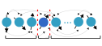
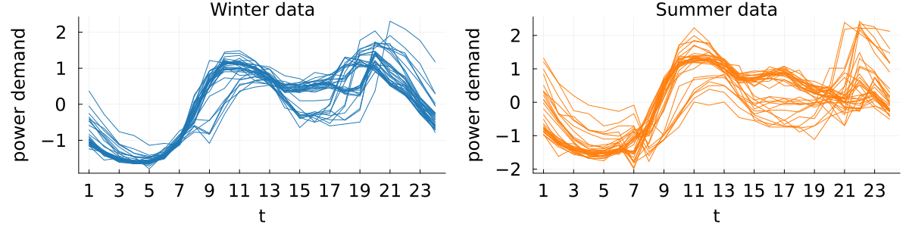
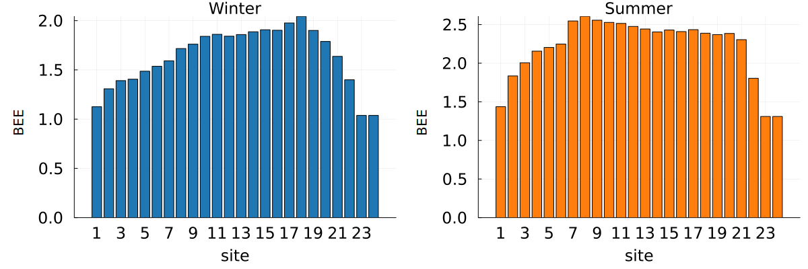
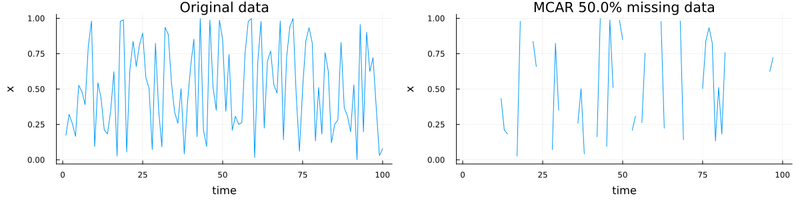
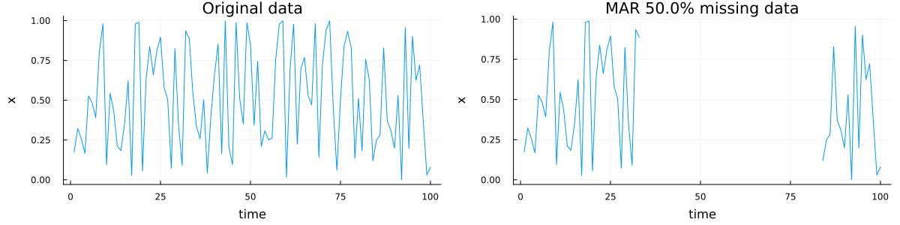

Tools
Entanglement Entropy
Overview
In quantum many-body physics, the entanglement entropy (EE) determines the extent to which two partitions of the collective quantum system are entangled. More simply, the EE can be thought of as quantifying the information shared between subsystem $A$ and subsystem $B$ within a many-body system. In practice, the EE is computed as the von Neumman entropy of the reduced density matrix for any of the two subsystems ($A$ or $B$). An EE of zero implies that there is no entanglement between the subsystems.
We provide functions for two types of EE: (i) single-site entanglement entropy (SEE), and (ii) bipartite entanglement entropy (BEE):
(1) Single-site entanglement entropy (SEE)
The single-site entanglement entropy (SEE) quantifies the degree of entanglement between a single site (time-point) in the MPS and all other sites (time points). Given a particular site in the MPS, $i$, the SEE is then specified by the von Neumann entropy of the reduced density matrix [3, 4]:
\[S_\textrm{SEE} = -\mathrm{tr}\ \rho_i \log \rho_i\,,\]
where $\rho_i$ is the reduced density matrix (rdm) at site $i$, obtained by tracing over all sites except for the $i$-th site:
\[\rho_i = Tr_{/i} \ket{\psi}\bra{\psi}\,,\]
and $\ket{\psi}$ is the MPS. Using the 1D spin-chain as an illustrative example, the SEE between a single site (dark blue) and the rest of the system (light blue) can be depicted as:

(2) Bipartite entanglement entropy (BEE)
The bipartite entanglement entropy (BEE) quantifies the quantum entanglement between two complementary subsystems of a matrix product state (MPS). For an MPS with $N$ sites, we can create a bipartition by splitting the system at any bond $l$, resulting in region $A$ (sites $1$ to $l$) and region $B$ (sites $l+1$ to $N$). The BEE can be expressed using the singular values of the Shmidt decomposition of either of the two subsystems:
\[\ket{\psi} = \sum_i \alpha_i \ket{u_i}_A \otimes \ket{v_i}_B\,,\]
where $\alpha_i$ are the Schmidt coefficients (singular values) satisfying $\sum_i \alpha_i^2 = 1$, $\ket{u_i}_A$ and $\ket{v_i}_B$ are orthonormal states in subsystem $A$ and $B$, respectively. The BEE is then given by the von Neumann entropy [4]:
\[S_\textrm{BEE} = -\sum_i \alpha_i^2 \log \alpha_i^2\,.\]
The BEE can be represented schematically using the 1D spin chain analogy where the red dotted line denotes the bipartition, the light blue particles represent subsystem $A$ and the dark blue represent subsystem $B$:

Bipartite Entanglement Entropy (BEE)
Given a trained MPS (for either classification or imputation), we can compute the bipartite entanglement entropy (BEE) using the bipartite_spectrum function:
# train the MPS as usual
mps, _, _ = fitMPS(...);
bees = bipartite_spectrum(mps);A vector is returned where each entry contains the BEE spectrum for the class-specific MPS. For example, in the case of a two class problem, we obtain the individual BEE spectrums for the class 0 MPS and the class 1 MPS. For an unsupervised problem with only a single class, there is only a single BEE spectrum.
Example
To illustrate how we might use the BEE in a typical analysis, consider an example involving real world time series from the ItalyPowerDemand (IPD) UCR dataset. There are two classes corresponding to the power demand during: (i) the winter months; (ii) the summer months. For this example, we will train an MPS to classify between summer and winter time-series data:
# load in the training data
using JLD2
ipd_load = jldopen("ipd_original.jld2", "r");
X_train = read(ipd_load, "X_train")
y_train = read(ipd_load, "y_train")
X_test = read(ipd_load, "X_test")
y_test = read(ipd_load, "y_test")
close(ipd_load)
opts = MPSOptions(d=10, chi_max=40, nsweeps=10; init_rng=4567)
mps, _, _ = fitMPS(X_train, y_train, X_test, y_test, opts)Let's take a look at the training dataset for this problem:
 Using the trained MPS, we can then inspect the BEE for the class 0 (winter) and class 1 (summer) MPS individually:
bees = bipartite_spectrum(mps);
bee0, bee1 = bees
b1 = bar(bee0, title="Winter", label="", c=palette(:tab10)[1], xlabel="site", ylabel="entanglement entropy");
b2 = bar(bee1, title="Summer", label="", c=palette(:tab10)[2], xlabel="site", ylabel="entanglement entropy");
p = plot(b1, b2)
Single-Site Entanglement Entropy (SEE)
Given a trained MPS, we can also compute the single-site entanglement entropy (SEE) using the single_site_spectrum function:
# train MPS as usual
mps, _, _ = fitMPS(...);
sees = MPSTime.single_site_spectrum(mps);As with the BEE, a vector is returned where each entry contains the SEE spectrum for the class-specific MPS.
Example
Continuing our example from the BEE with the ItalyPowerDemand (IPD) dataset, we will now compute the single-site entanglement entropy (SEE) spectrum:
sees = single_site_spectrum(mps);
see0, see1 = sees
b1 = bar(see0, title="Winter", label="", c=palette(:tab10)[1], xlabel="site", ylabel="SEE");
b2 = bar(see1, title="Summer", label="", c=palette(:tab10)[2], xlabel="site", ylabel="SEE");
p = plot(b1, b2)
Missing Data Simulation
In the time-series imputation literature, time-series data can be categorised into one of three types based on the underlying process responsible for the missing data: (i) missing completely at random (MCAR); (ii) missing at random (MAR); or, (iii) missing not at random (MNAR). A review of the various mechanisms in the univariate setting can be found in [5].
MPSTime provides implementations of all three mechanisms, adapted from the more typical multivariate setting to the case of univariate time-series data. To generate synthetic missing data, the original (uncorrupted) univariate time-series instance is passed into a function which assigns a NaN value to time points determined by the missing data mechanism of choice.
Missing Completely at Random (MCAR)
To simulate missing completely at random (MCAR) data, the locations (time points) of missing points are sampled from a Bernoulli distribution where the probability of a "successful trial" (i.e., missing data point) is the same for all time points. Let's generate a random time-series instance and simulate 50% data missingness using an MCAR mechanism:
using MPSTime
using Random
Random.seed!(42)
pm = 0.5 # 50% data missing
X_clean = rand(100) # your data as a vector
X_corrupted, X_missing_inds = mcar(X_clean, pm)The mcar function will return two values: a copy of the time-series with NaN values at missing positions (X_corrupted), and the indices of the missing values (X_missing_inds). Let's plot the corrupted data:
using Plots
p1 = plot(X_clean, xlabel="time", ylabel="x", label="", title="Original data");
p2 = plot(X_corrupted, xlabel="time", ylabel="x", label="", title="MCAR $(pm*100)% missing data");
plot(p1, p2, size=(1200, 300));
For reproducibility, we can optionally pass in a random seed to the mcar function:
seed = 42; # random seed
X_corrupted, X_missing_inds = mcar(X_clean, pm; state=seed)Missing at Random (MAR)
Following from the example above with randomly generated data, we can simulate a missing at random (MAR) mechanism using the mar function. Currently, MPSTime supports block missing patterns whereby a starting time point is randomly selected, and all subsequent observations within a specified block length are set to NaN:
# using the same data, X_clean, from above...
pm = 0.5
X_corrupted, X_missing_inds = mar(X_clean, pm)Plotting the corrupted data:

Missing Not At Random (MNAR)
To simulate missing not at random (MNAR) data, use the mnar function. There are two possible options for the MNAR mechanims: (i) LowestMNAR (default option) and (ii) HighestMNAR. The LowestMNAR mechanism sets the lowest N values of the time-series to NaN where N is determined by the target percentage data missing. Conversely, HighestMNAR sets the highest N value to NaN:
# using the same data, X_clean, from above...
pm = 0.5
X_corrupted_low, X_missing_inds_low = mnar(X_clean, pm) # default setting uses LowestMNAR
X_corrupted_high, X_missing_inds_high = mnar(X_clean, pm, MPSTime.HighestMNAR()) # use the HighestMNAR mechanismPlotting corrupted time-series from the LowestMNAR mechanism:

Docstrings
MPSTime.single_site_spectrum — Functionsingle_site_spectrum(mps::TrainedMPS) -> Vector{Vector{Float64}}Compute the single-site entanglement entropy (SEE) spectrum of a trained MPS.
The single-site entanglement entropy (SEE) quantifies the entanglement between each site in the MPS and all other sites. It is computed as:
$\text{SEE} = -\text{tr}(\rho \log(\rho))$
where $\rho$ is the single-site reduced density matrix (RDM).
Arguments
mps::TrainedMPS: A trained Matrix Product State (MPS).
Returns
A vector of vectors, where the outer vector corresponds to each label in the expanded MPS, and the inner vectors contain the SEE values for the respective sites.
MPSTime.bipartite_spectrum — Functionbipartite_spectrum(mps::TrainedMPS; logfn::Function=log) -> Vector{Vector{Float64}}Compute the bipartite entanglement entropy (BEE) of a trained MPS across each bond. Given a single unlabeled MPS the BEE is defined as:
$\sum_i \alpha_i^2 \log(\alpha_i^2)$
where $\alpha_i$ are the eigenvalues obtained from the shmidt decomposition.
MPSTime.mcar — Functionmcar(X::AbstractVector, fraction_missing::Float64, mechanism::MCARMechanism=BernoulliMCAR();
rng::AbstractRNG=Random.GLOBAL_RNG, verbose::Bool=false) -> Tuple{Vector{Float64}, Vector{Int64}}Generate missing data using a Missing Completely At Random (MCAR) mechanism, where the probability of missingness is independent of both observed and unobserved values. Available mechanisms:
BernoulliMCAR(): Missing values are generated by sampling from a Bernoulli distribution with probabilityfraction_missing.
Arguments
X::AbstractVector: Input time series data.fraction_missing::Float64: Target fraction of missing values, must be between 0 and 1 (default: 0.5).mechanism::MCARMechanism: Mechanism used to generate missing values (default:BernoulliMCAR()).rng::AbstractRNG: Random number generator for reproducibility (default: GLOBAL_RNG).verbose::Bool: If true, prints comparison of target vs actual percentage of missing values.
Returns
X_corrupted::Vector{Float64}: Copy of input vector with NaN values at missing positions.missing_idxs::Vector{Int64}: Indices of missing values.
MPSTime.mar — Functionmar(X::AbstractVector, fraction_missing::Float64, mechanism::MARMechanism=BlockMissingMAR();
rng::AbstractRNG=Random.GLOBAL_RNG, verbose::Bool=false) -> Tuple{Vector{Float64}, Vector{Int64}}Generate missing data using a Missing At Random (MAR) mechanism, where the probability of missingness depends only on observed values or known information. Available mechanisms:
BlockMissingMAR(): Generates a contiguous block of missing values with random start position.
The missingness of each point after the first depends on the position of previous missing values.
Arguments
X::AbstractVector: Input time series data.fraction_missing::Float64: Target fraction of missing values, must be between 0 and 1 (default: 0.5).mechanism::MARMechanism: Mechanism used to generate missing values (default:BlockMissingMAR())rng::AbstractRNG: Random number generator for reproducibility (default: GLOBAL_RNG).verbose::Bool: If true, prints comparison of target vs actual percentage of missing values.
Returns
X_corrupted::Vector{Float64}: Copy of input vector with NaN values at missing positions.missing_idxs::Vector{Int64}: Indices of missing values.
MPSTime.mnar — Functionmnar(X::AbstractVector, fraction_missing::Float64, mechanism::MNARMechanism=LowestMNAR();
verbose::Bool=false) -> Tuple{Vector{Float64}, Vector{Int64}}Generate missing data using a Missing Not At Random (MNAR) mechanism, where the probability of missingness depends on the unobserved values themselves. Available mechanisms:
LowestMNAR(): Introduces missing values at positions with the lowest values in the time series. Implementation as in Twala 2019.HighestMNAR(): Introduces missing values at positions with the highest values in the time series. Implementation as in Xia et al. 2017.
Arguments
X::AbstractVector: Input time series data.fraction_missing::Float64: Target fraction of missing values, must be between 0 and 1 (default: 0.5).mechanism::MNARMechanism: Mechanism used to generate missing values (default:LowestMNAR()).verbose::Bool: If true, prints comparison of target vs actual percentage of missing values.
Returns
X_corrupted::Vector{Float64}: Copy of input vector with NaN values at missing positions.missing_idxs::Vector{Int64}: Indices of missing values.
Internal Methods
MPSTime.von_neumann_entropy — Functionvon_neumann_entropy(mps::MPS; logfn::Function=log) -> Vector{Float64}Compute the von Neumann entanglement entropy for each site in a Matrix Product State (MPS).
The von Neumann entropy quantifies the entanglement at each bond of the MPS by computing the entropy of the singular value spectrum obtained from a singular value decomposition (SVD). The entropy is computed as:
$S = -\sum_{i} p_i \log(p_i)$
where $p_i$ are the squared singular values normalized to sum to 1.
Arguments
mps::MPS: The Matrix Product State (MPS) whose entanglement entropy is to be computed.logfn::Function: (Optional) The logarithm function to use (log,log2, orlog10). Defaults to the natural logarithm (log).
Returns
A vector of Float64 values where the i-th element represents the von Neumann entropy at site i of the MPS.
MPSTime.one_site_rdm — Functionone_site_rdm(mps::MPS, site::Int) -> MatrixCompute the single-site reduced density matrix (RDM) of the MPS at a given site. If the RDM is not positive semidefinite, clamp the negative eigenvalues (if within the tolerance) and reconstruct the rdm.